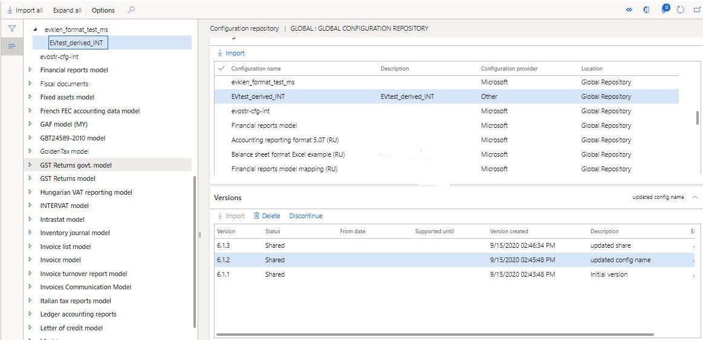

ER-Konfigurationen in gesetzlichen Konfigurationsdiensten (Regulatory Configuration Services, RCS) erstellen und sie in das globale Repository hochladen
Important
Dynamics 365 for Finance and Operations hat sich zu speziell entwickelten Anwendungen entwickelt, mit denen Sie bestimmte Geschäftsfunktionen verwalten können. Weitere Informationen zu diesen Änderungen finden Sie im Dynamics 365-Lizenzierungshandbuch.
Mit Microsoft Regulatory Configuration Services (RCS) können Sie ER-Konfigurationen (Electronic Reporting) entwerfen und veröffentlichen, damit sie in Ihrem Unternehmen verwendet werden können.
In den folgenden Verfahren wird erläutert, wie ein Benutzer in der Rolle „Systemadministrator“ oder „Entwickler für elektronische Berichterstellung“ eine abgeleitete Version einer ER-Konfiguration erstellen kann, die in einer RCS-Instanz konfiguriert wurde, und anschließend die abgeleitete Konfiguration in das globale Repository hochlädt.
Bevor Sie diese Prozeduren abschließen können, müssen Sie zunächst die folgende Voraussetzungen abschließen.
- Auf eine RCS-Instanz zugreifen.
- Einen aktiven Konfigurationsanbieter erstellen. Weitere Informationen finden Sie unter Konfigurationsanbieter erstellen und als aktiv markieren.
Sie müssen auch sicherstellen, dass eine RCS-Umgebung für Ihr Unternehmen bereitgestellt wird.
- Wechseln Sie in der Finance and Operations-App zu Organisationsverwaltung > Arbeitsbereiche > Elektronische Berichterstellung.
- Wenn keine RCS-Umgebung für Ihr Unternehmen bereitgestellt wurde, klicken Sie auf Regulatory services – externe Konfiguration und folgen Sie den Anweisungen zur Bereitstellung einer RCS-Umgebung.
Wenn für Ihr Unternehmen bereits eine RCS-Umgebung bereitgestellt wurde, verwenden Sie die Seiten-URL, um darauf zuzugreifen, indem Sie die Anmeldeoption auswählen.
Erstellen Sie eine abgeleitete Version einer Konfiguration in RCS
- Stellen Sie im Arbeitsbereich Elektronische Berichterstattung sicher, dass Sie einen aktiven Konfigurationsanbieter für Ihre Organisation haben.
- Wählen Sie Berichterstellungskonfigurationen aus.
- Wählen Sie die Konfiguration aus, von der Sie eine neue Version ableiten möchten. Sie können das Filterfeld über der Struktur verwenden, um Ihre Suche einzugrenzen.
- Wählen Sie Konfiguration erstellen > Vom Namen ableiten.
- Geben Sie einen Namen und eine Beschreibung ein und wählen Sie dann Konfiguration erstellen aus, um eine neue abgeleitete Version zu erstellen.
- Wählen Sie die neu abgeleitete Konfiguration aus, fügen Sie eine Beschreibung der Version hinzu, und wählen Sie dann OK aus. Der Status der Konfiguration in wird in Abgeschlossen geändert.
Note
Wenn der Konfigurationsstatus geändert wird, wird möglicherweise eine Validierungsfehlermeldung angezeigt, die sich auf die verbundenen Anwendungen bezieht. Um die Validierung zu deaktivieren, klicken Sie im Aktionsbereich auf der Registerkarte Konfigurationen auf Benutzerparameter, und setzen Sie dann Validierung bei der Statusänderung und Neubasis der Konfiguration überspringen auf Ja.
Eine Konfiguration in das globale Repository hochladen
Um eine neue oder abgeleitete Konfiguration für Ihre Organisation freizugeben, können Sie sie in das globale Repository hochladen.
Wählen Sie die fertige Version der Konfiguration aus und wählen Sie dann In das Repository hochladen.
Wählen Sie die Option Global (Microsoft) aus und dann Hochladen.
Wählen Sie im Benachrichtigungsfeld Ja aus.
Aktualisieren Sie die Beschreibung der Version nach Bedarf und wählen Sie dann OK aus.
Der Status der Konfiguration wird auf Teilen aktualisiert, und die Konfiguration wird in das globale Repository hochgeladen. Hier können Sie damit auf folgende Arten arbeiten:
Sie in die Dynamics 365-Instanz importieren Weitere Informationen finden Sie unter Elektronische Berichterstellungskonfigurationen (ER) aus RCS importieren.
Teilen Sie die Version mit Dritten oder einer externen Organisation RCS Share Electronic Reporting (ER) -Konfigurationen mit externen Organisationen teilen

Eine Konfiguration aus dem globalen Repository löschen
Führen Sie die folgenden Schritte aus, um eine von Ihrer Organisation erstellte Konfiguration zu löschen.
Bestätigen Sie im Arbeitsbereich Elektronische Berichterstattung dass Ihr Konfigurationsanbieter Aktiv ist. Weitere Informationen finden Sie unter Konfigurationsanbieter erstellen und als aktiv markieren.
Wählen Sie auf Ihrem aktiven Konfigurationsanbieter Repository.
Wählen Sie den Repository-Typ Global und Öffnen.
Suchen Sie im Inforegister Filter nach der Konfiguration, die Sie löschen möchten, indem Sie die Filter-Funktionalität verwenden.
Im Inforegister Version wählen Sie die Version der Konfiguration aus, die Sie löschen möchten, und wählen dann Löschen:

Wählen Sie im Benachrichtigungsfeld Ja aus.

Die Konfigurationsversion wird gelöscht und eine Bestätigungsmeldung angezeigt.
Note
Konfigurationen können nur von dem Konfigurationsanbieter gelöscht werden, der sie erstellt hat. Wenn die Konfiguration für eine andere Organisation freigegeben wurde, muss die Freigabe der Konfiguration aufgehoben werden, bevor Sie sie löschen können.